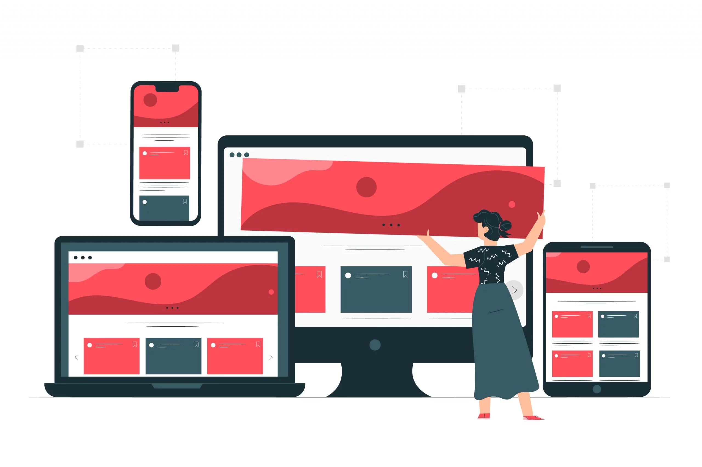

SERVICES
Mon objectif est de créer des applications et des sites web efficaces, avec des designs modernes et des fonctionnalités intuitives. J’utilise des technologies actuelles pour garantir que chaque projet respecte les normes de qualité et offre une expérience utilisateur exceptionnelle.

Création d’applications web et mobiles
Je propose des services de développement d’applications web et mobiles sur mesure, en me concentrant sur l’expérience utilisateur et la performance. En utilisant des technologies modernes comme React, Vue.js, ou Flutter, je crée des solutions interactives et réactives adaptées aux besoins spécifiques de chaque client. Que ce soit pour une petite entreprise ou une grande organisation, je vous aide à concrétiser vos idées en des applications intuitives et efficaces.
Développement de sites web sur mesure
J’offre des services de création de sites web entièrement personnalisés, en mettant l’accent sur la simplicité, l’esthétique et la fonctionnalité. Qu’il s’agisse d’un site vitrine, d’une plateforme e-commerce ou d’un blog, je m’assure que chaque projet réponde aux attentes spécifiques de mes clients tout en garantissant une expérience utilisateur optimale. Grâce à une approche axée sur les technologies actuelles et une conception responsive, vos utilisateurs auront une expérience fluide, quel que soit le dispositif utilisé.

Développement d’applications logicielles
Je crée des applications robustes et efficaces en utilisant Python et C#. Que ce soit pour des scripts d’automatisation, des applications de bureau ou des systèmes complexes, je m’assure que chaque projet soit optimisé pour la performance et la facilité d’utilisation. Avec Python, je peux développer des outils flexibles pour le traitement des données, l’intelligence artificielle ou le web scraping, tandis qu’avec C#, je construis des applications modernes et interactives adaptées aux besoins spécifiques de chaque client.

Création de sites web et développement front-end
Je propose des services de création de sites web dynamiques et attrayants, en mettant l’accent sur l’expérience utilisateur et le design responsive. Grâce à l’utilisation de HTML, CSS et JavaScript, je construis des interfaces intuitives qui fonctionnent parfaitement sur tous les appareils. Que ce soit pour un site vitrine, un blog personnel ou une plateforme interactive, je m’assure que chaque projet soit personnalisé selon vos besoins et réponde aux attentes de vos utilisateurs.